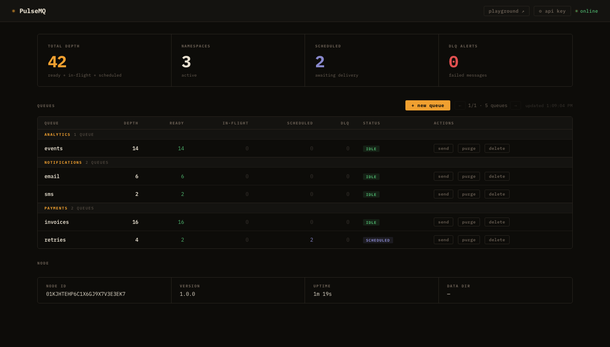
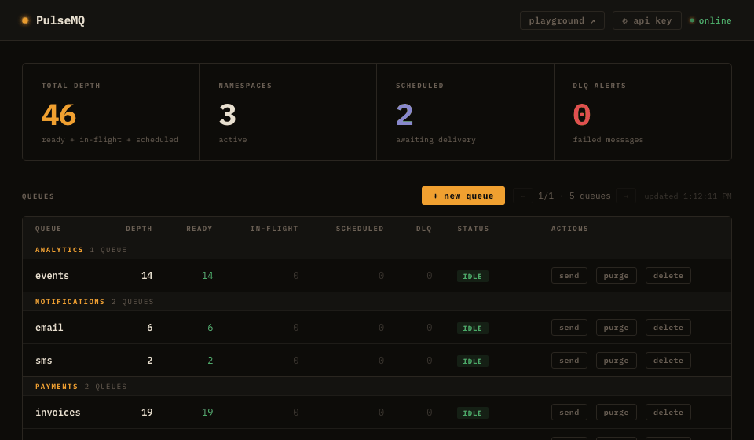

Durable message queue with native scheduled delivery. Self-hosted. Zero dependencies.
v1 · single-node · 3-node Raft cluster support is on the roadmap
Why PulseMQ
Until now, delayed and time-based workflows usually required multiple moving parts. PulseMQ brings them into one simple queueing model.
deliver_at — any future UTC millisecondAlternatives
PulseMQ is purpose-built for scheduled and delayed delivery. Here's how it stacks up against common alternatives.
| Capability | PulseMQ | Redis + BullMQ | Sidekiq | Temporal |
|---|---|---|---|---|
| Native ms-precision scheduled delivery | ✅ first-class | ⚠️ delayed jobs (polling) | ⚠️ scheduled jobs (polling) | ✅ workflow timers |
| Self-hostable, single binary | ✅ ~8 MB, zero deps | ⚠️ requires Redis | ⚠️ requires Redis + Ruby | ⚠️ multi-service cluster |
| Clustering | ❌ v1 single-node Raft on roadmap |
✅ Redis Cluster | ✅ via Redis | ✅ built-in |
| Language support | Any (HTTP/WS) + Go SDK | JS / TS | Ruby | Many official SDKs |
| Dead-letter queue | ✅ built-in per queue | ✅ failed job set | ✅ retry + dead set | ✅ workflow history |
| Operational complexity | Low — one process | Medium — Redis + workers | Medium — Redis + Sidekiq | High — server + workers + DB |
| Primary use case | Scheduled & delayed job delivery | General background jobs (Node) | Background jobs (Ruby) | Long-running, stateful workflows |
PulseMQ is the right choice when you need precise scheduled delivery with minimal operational overhead and no external dependencies. For complex multi-step orchestration, Temporal may be a better fit.
Features
Built ground-up in Go. No dependencies, no configuration sprawl.
Set deliver_at to any future UTC millisecond. An in-memory Min-Heap (O(1) peek, O(log N) insert) fires messages precisely when due — no database polling loop.
Visibility timeouts lock messages while in-flight. If your consumer crashes without ACKing, the message becomes ready again automatically.
Every queue gets a paired DLQ. Failed messages land there after max_retries. Inspect and replay with a single API call.
HTTP poll, WebSocket push (with backpressure), or Webhook delivery — pick what fits your architecture. Mix and match per queue.
Append-only WAL + bbolt index. On restart the WAL is replayed to restore all state exactly as it was. Default fsync=interval (1 s) — for zero data loss on a hard crash set fsync=always. Durability details →
Live queue depths, scheduled counts, DLQ alerts, pagination for 500+ queues. Create queues, send messages, replay DLQ — all from the browser.

Published, consumed, ACKed, NACKed, DLQ-routed counters per queue. HTTP request latency histograms. Scrape from port 9090.
Static API key via X-Api-Key header. Per-IP token-bucket rate limiter and request body size cap built in.
v1 runs as a single node. 3-node Raft cluster support is on the roadmap — and the WAL format already carries Raft term + log_index fields, so the storage format won't change when clustering ships.
"Send email 1 hour after signup? Schedule a payment retry in 24 hours? Cancel an order in 30 minutes? That's one deliver_at."
— Stop writing cron jobs. Start publishing messages.
How it works
Traditional solutions poll the database every second. PulseMQ knows exactly when the next message is due and sleeps until that moment.
Set deliver_at to a UTC millisecond timestamp. If it's in the future, the message enters the scheduler's Min-Heap. If immediate, it goes straight to the READY queue.
A background goroutine peeks at the heap root (O(1)) and sleeps until that timestamp. On fire, it pops the message and pushes it to READY.
Your consumer polls, subscribes via WebSocket, or receives a webhook POST. The message is locked with a visibility timeout.
Call DELETE /messages/:receipt_handle to ACK. Call POST .../nack to requeue. Exhaust retries and it moves to the DLQ.
See it live
Ready count ticks up as messages are published. A scheduled message sits in "Scheduled" until its deliver_at fires — then it flips to "Ready" automatically.

Quick start
Docker Compose is the fastest path. A single binary works just as well.
↑ Delivers in 60 seconds from now.
Use cases
Any task that runs "later" is a candidate.
Publish welcome email jobs with deliver_at spaced 1 day, 3 days, 7 days after signup. No cron, no DB polling.
After a failed charge, schedule a retry in 24 hours. If that fails, schedule another at 72 hours. No scheduler service needed.
WithDelay(24 * time.Hour)At checkout start, publish a reminder message for 30 minutes later. Cancel it if the order completes — or let it fire and send the nudge.
WithDelay(30 * time.Minute)Publish a "go live" job for a blog post at exactly 9 AM Monday. No CMS flag polling, no cron expression debugging.
WithDeliverAt(monday9am)When a subscription is created, publish a renewal job for 3 days before expiry. When the job fires, publish the next one.
WithDeliverAt(expiryDate - 3 days)Space out 10,000 marketing emails by staggering deliver_at timestamps. No external throttle service needed.
AI & Agents
Agents need to act later, not just now. deliver_at + DLQ handles scheduling, rate limits, and async jobs without adding another dependency.
"Remind me to follow up in 3 days" → agent publishes with deliver_at = now + 3 days. Fires exactly when due, no polling loop.
Hit a 429? Publish the request with deliver_at = now + retry_after_ms. Consumer picks it up exactly when the window resets. No sleep loops.
User submits → publish job → return ID immediately. Worker calls LLM, stores result. If it crashes mid-task, visibility timeout requeues automatically.
publish → consume → notifyAgent proposes action → publish to pending_approval. Human approves → ACK fires next step. No response → DLQ triggers auto-decline path.
Publish "generate weekly report" with deliver_at = next Monday 9am. Worker calls LLM, emails result. No cron job, no always-on process.
Step 1 completes → publishes step 2 with a delay. Each step is durable, retriable, and observable from the dashboard.
step1 → delay → step2Performance
Single-node numbers. Throughput varies significantly by environment — these are estimated ranges.
| Metric | Linux VPS (2–4 vCPU, shared SSD) |
Docker Desktop (macOS / Windows VM) |
Notes |
|---|---|---|---|
| Write throughput (fsync=interval) | ~15,000 msgs/sec | ~4,000 msgs/sec | Default config. Bottleneck: WAL fsync + disk I/O. |
| Write throughput (fsync=never) | ~80,000 msgs/sec | ~4,000 msgs/sec | Lossy mode — no durability guarantee on crash. |
| Read throughput | ~30,000 msgs/sec | ~2,000 msgs/sec | 50 concurrent consumers, batch=100. |
| Delivery accuracy | ±15–30 ms | ±50–200 ms | VM timer jitter dominates on Docker Desktop. |
| Scheduled heap size | 1M entries ≈ ~100 MB RAM | In-memory Min-Heap. Linear with entry count. | |
| Maximum connections | ~65,000 TCP | OS ulimit — not a PulseMQ limit. | |
| In-memory index @ 10 GB RAM | ~100M messages | bbolt page cache. | |
| Docker image size | ~8 MB | Multi-stage scratch build. Measured. | |
| Minimum RAM | 512 MB | Runs comfortably on free-tier VMs. | |
| Max message size | 256 KB | Configurable via max_message_size_kb. Matches SQS's limit — for larger payloads, store data in object storage and pass a reference ID in the message body. |
|
| Max messages per queue | 100,000 | Default cap. Configurable via max_messages per queue. |
|
| Max batch size (consume) | 100 msgs | Max messages returned per Consume call. Configurable via max_batch_size. |
|
| Message metadata | ≤16 keys · key ≤64 B · value ≤512 B | String key/value pairs attached at publish time. Use for routing hints, trace IDs, or tags. Enforced at publish — rejected with 400 if exceeded. | |
* All throughput numbers are estimated. Write numbers: 50 concurrent producers, batch size 100, measured over 30 seconds. Read numbers: 50 concurrent consumers, batch size 100. Docker Desktop numbers measured on macOS with Apple Silicon.
Open source
PulseMQ is fully open source. Contributions, bug reports, and feature discussions are welcome.